Data visualization with R & ggplot2
Hands-on tutorial
Rodrigo Theodoro Rocha
Outline
- Introduction
- Rationale behind ggplot2
- "Hello World" Plot
- Basic Template
- Themes
- Aggregating Aesthetics
- Line Plots
- Faceting
- Histograms
- Scales
- Box Plot
- ggpubr + Multiple Plots Same Figure
- Saving Plots
Introduction
"A picture is worth a thousand words"
- Show Challenger space shuttle disaster
"A picture is worth a thousand words"
Always plot the data.
Replace (or complement) 'typical' tables of data or statistical results with figures that are more compelling and accessible.
Whenever possible, generate figures that overlay / juxtapose observed data and analytical results, e.g. the 'fit'.
(source: jenny@UBC)
Rationale behind ggplot2
R base vs ggplot2
Comparison for simple graphs:
hist(iris$Sepal.Width)
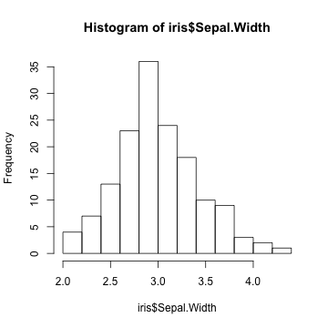
ggplot(data = iris) +
geom_histogram(mapping = aes(x = Sepal.Width), binwidth = 0.25) + theme_classic()

R base vs ggplot2
Comparison for complex graphs:
par(mar = c(4,4,.1,.1))
plot(Sepal.Width ~ Sepal.Length, data = subset(iris, Species == "setosa"), col = "red", xlim = c(4, 8))
points(Sepal.Width ~ Sepal.Length, col = "green", data = subset(iris, Species == "versicolor"))
points(Sepal.Width ~ Sepal.Length, col = "blue", data = subset(iris, Species == "virginica"))
legend(6.5, 4.2, c("setosa", "versicolor", "virginica"), title = "Species", col = c("red", "green", "blue"), pch=c(1,1,1))

ggplot(data = iris) +
geom_point(mapping = aes(x = Sepal.Length, y = Sepal.Width, colour = Species))

Why ggplot2
Based on the Grammar of Graphics (Wilkinson, 2005)
It can be difficult so Forget your preconceptions from other graphics tools
ggplot2 is designed to work iteratively
What is the grammar of graphics?
- is an answer to a question: what is a statistical graphic?
3 Key Components
- data, in data.frame form
- A set of aesthetic mappings between variables in the data and visual properties.. position, color, line type?, and
- At least one geom to speficy what people see.. points? lines? bars?

RStudio's data visualization cheatsheet
- https://github.com/rstudio/cheatsheets/raw/master/data-visualization-2.1.pdf (ggplot2-cheatsheet)

"Hello World" Plot
First component: Data
Iris dataset gives measurements (cm) of sepal and petal from three species of Iris.

head(iris)
## Sepal.Length Sepal.Width Petal.Length Petal.Width Species
## 1 5.1 3.5 1.4 0.2 setosa
## 2 4.9 3.0 1.4 0.2 setosa
## 3 4.7 3.2 1.3 0.2 setosa
## 4 4.6 3.1 1.5 0.2 setosa
## 5 5.0 3.6 1.4 0.2 setosa
## 6 5.4 3.9 1.7 0.4 setosa
Exercises
- How many species in iris dataset ?
- How many flowers (total) in this dataset?
- How can you get more info about this dataset?
- Is this dataset appropriate for a plot?
- 3
- 150
- ?iris
- data.frame
Second component: Aesthetics
We have our 1st essential component: Data, in data.frame form. Which aesthetics should we mapping to?
- Suppose we wish to plot in axis x and y repectively the sepal's length and width.
- Mapping
Sepal.LengthandSepal.Widthto aestheticsxandy.
- Mapping
ggplot(data = iris, mapping = aes(x = Sepal.Length, y = Sepal.Width))
ggplot(data = iris, mapping = aes(x = Sepal.Length, y = Sepal.Width))

Last but not least: geometry
- Geometry: points (
geom_point()).
ggplot(data = iris, mapping = aes(x = Sepal.Length, y = Sepal.Width)) +
geom_point()
ggplot(data = iris, mapping = aes(x = Sepal.Length, y = Sepal.Width)) +
geom_point()
gp <- ggplot(data = iris) +
geom_point(mapping = aes(x = Sepal.Length, y = Sepal.Width))
gp

To Summarize
Basic Template
ggplot(data = <DATA>) +
geom_point(mapping = aes(<MAPPINGS>))
- Specify the data inside the ggplot function.
- Anything else that goes in there becomes a global setting.
- Then add layers of geometric objects.
Themes
Do not worry about the main visual ! Use themes.
gp + theme_classic()

https://github.com/jrnold/ggthemes
https://cran.r-project.org/web/packages/ggsci/vignettes/ggsci.html
# install.packages("ggthemes")
library(ggthemes)
gp + theme_economist() + scale_colour_economist()

https://cran.r-project.org/web/packages/cowplot/index.html
# install.packages("cowplot")
library(cowplot)
gp
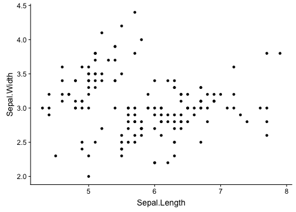
Aggregating aesthetics
Aggregating aesthetics
- To add aditional variables to a plot use other aesthetics like
colour,shape, andsize.

- These work in the same way as the
xandyaesthetics.
ggplot(data = iris, mapping = aes(x = Sepal.Length, y = Sepal.Width)) +
geom_point(mapping = aes(colour = Species))
ggplot(data = iris, mapping = aes(x = Sepal.Length, y = Sepal.Width)) +
geom_point(mapping = aes(colour = Species))

- We could have mapped class to the
sizeaesthetic in the same way. - Do it!
ggplot(data = iris, mapping = aes(x = Sepal.Length, y = Sepal.Width)) +
geom_point(mapping = aes(size = Species))
## Warning: Using size for a discrete variable is not advised.

- We also could have mapped class to the
shapeaesthetic in the same way but increasing all the points size. - Do it!
ggplot(data = iris, mapping = aes(x = Sepal.Length, y = Sepal.Width)) +
geom_point(mapping = aes(shape = Species), size = 3)

ggplot(data = iris, mapping = aes(x = Sepal.Length, y = Sepal.Width)) +
geom_point(mapping = aes(shape = Species), size = 3, position = "jitter")
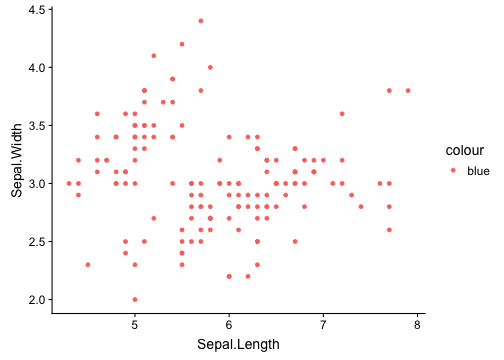
Multitude of Shapes
- 25 built in shapes identified by numbers (
+ scale_shape_manual(values=<VECTOR OF SHAPES>)) - What's the difference between squares 0, 15 and 22?
- 0-14 border determined by
colour - 15-18 filled with
colour - 21-24 border of
colourand filled withfill
- 0-14 border determined by

Exercises
Q1. What's gone wrong with this code? Why are the points not blue?
ggplot(data = iris, mapping = aes(x = Sepal.Length, y = Sepal.Width)) +
geom_point(mapping = aes(colour = "blue"))
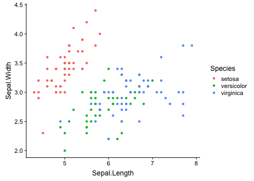
Inside vs Outside parameters
- Remember that aesthetic is associated with variables - inside parameter (left plot)
- Attributes outside the mapping are general characteristics applied to the geometry (right plot)
ggplot(data = iris, mapping = aes(x = Sepal.Length, y = Sepal.Width)) +
geom_point(mapping = aes(colour = Species))

ggplot(data = iris, mapping = aes(x = Sepal.Length, y = Sepal.Width)) +
geom_point(colour = "blue")
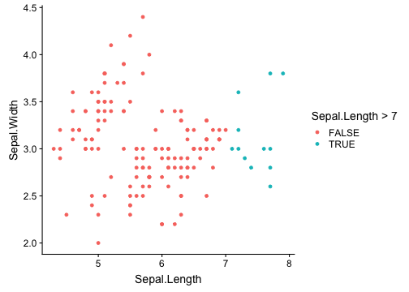
Q2. What happens if you map an aesthetic to something other than a variable name, like aes(colour = Sepal.Length > 7)?
ggplot(data = iris, mapping = aes(x = Sepal.Length, y = Sepal.Width)) +
geom_point(mapping = aes(colour = Sepal.Length > 7))

Q3. Take a subset of diamonds dataset and reproduce the following plot:
d2 <- diamonds[sample(1:dim(diamonds)[1],1000),]
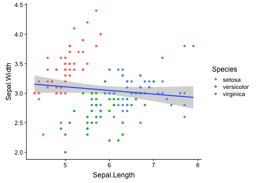
Line Plots
- A plot constructed with ggplot can have more than one geom
- Trends in data
- Our sepal width vs sepal length could use a linear regression
ggplot(data = iris, mapping = aes(x = Sepal.Length, y = Sepal.Width)) +
geom_point(mapping = aes(colour = Species)) + geom_smooth(method = "lm")
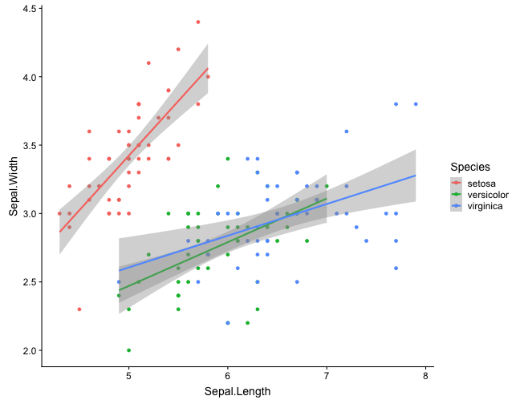
ggplot(data = iris, mapping = aes(x = Sepal.Length, y = Sepal.Width)) +
geom_point(mapping = aes(colour = Species)) +
geom_smooth(method = "lm", aes(color = Species))
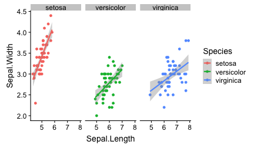
Facets
Faceting
- Create separate graphs for subsets of data
- Two main functions:
facet_wrap(): define subsets as the levels of a single grouping variablefacet_grid(): define subsets as the crossing of two grouping variables
ggplot(data = iris, mapping = aes(x = Sepal.Length, y = Sepal.Width)) +
geom_point(mapping = aes(colour = Species)) + geom_smooth(method = "lm", aes(color = Species)) + facet_wrap(~Species)

- Faceting along rows
ggplot(data = iris, mapping = aes(x = Sepal.Length, y = Sepal.Width)) +
geom_point(mapping = aes(colour = Species)) +
geom_smooth(method = "lm", aes(color = Species)) + facet_grid(. ~ Species)
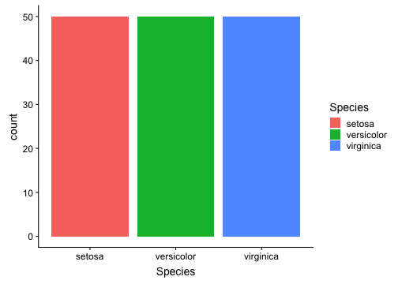
Bar chart
The following plot displays the total number of samples in the iris dataset grouped by Species
- x-axis displays species
- y-axis displays count (but count is not a var in
irisdataset)
ggplot(data = iris) +
geom_bar(mapping = aes(x = Species, fill = Species))

| Sepal.Length | Sepal.Width | Petal.Length | Petal.Width | Species |
|---|---|---|---|---|
| 5.1 | 3.5 | 1.4 | 0.2 | setosa |
| 4.9 | 3.0 | 1.4 | 0.2 | setosa |
| 4.7 | 3.2 | 1.3 | 0.2 | setosa |
| 4.6 | 3.1 | 1.5 | 0.2 | setosa |
| 5.0 | 3.6 | 1.4 | 0.2 | setosa |
| 5.4 | 3.9 | 1.7 | 0.4 | setosa |
- ggplot2 will compute new variables for our plot.
?geom_bar
Traditional bar chart
- We have the number of occurrences of a variable in variable
freq. This will be theyof our plot. Attention to the parameterstat. We change it toidentity.
| Species | freq |
|---|---|
| setosa | 50 |
| versicolor | 50 |
| virginica | 50 |
ggplot(data = iris_count) +
geom_bar(mapping = aes(x = Species, y=freq, fill=Species), stat = "identity")
ggplot(data = iris_count) +
geom_bar(mapping = aes(x = Species, y=freq, fill=Species), stat = "identity")

Exercise
Q1. Construct a histogram of any continuous variables within iris dataset (tip: take a look at ggplot2 cheatsheet and play with parameter binwidth)
Exercise
R1.
ggplot(data = iris) + geom_histogram(mapping = aes(x = Petal.Width), binwidth = 0.3)
Error bars
- We can plug error bars into the chart. First let's tidy our data and calculate the mean and standard sample error for the length grouped by structure and Species.
gather_iris <- gather(iris, Sepal.Length:Petal.Width,
key="structure", value="size")
iris_sum <- gather_iris %>% group_by(structure, Species) %>%
summarise(m = mean(size), sd = sd(size), sem = sd(size)/(sqrt(n())))
iris_sum
## # A tibble: 12 x 5
## # Groups: structure [?]
## structure Species m sd sem
## <chr> <fct> <dbl> <dbl> <dbl>
## 1 Petal.Length setosa 1.46 0.174 0.0246
## 2 Petal.Length versicolor 4.26 0.470 0.0665
## 3 Petal.Length virginica 5.55 0.552 0.0780
## 4 Petal.Width setosa 0.246 0.105 0.0149
## 5 Petal.Width versicolor 1.33 0.198 0.0280
## 6 Petal.Width virginica 2.03 0.275 0.0388
## 7 Sepal.Length setosa 5.01 0.352 0.0498
## 8 Sepal.Length versicolor 5.94 0.516 0.0730
## 9 Sepal.Length virginica 6.59 0.636 0.0899
## 10 Sepal.Width setosa 3.43 0.379 0.0536
## 11 Sepal.Width versicolor 2.77 0.314 0.0444
## 12 Sepal.Width virginica 2.97 0.322 0.0456
So, to plot the mean with bars we need some data transformations.
bar_ann <- ggplot(data = iris_sum, mapping = aes(x = structure, y = m, fill = Species)) +
geom_bar(position = "dodge", stat = "identity") +
geom_errorbar(mapping = aes(ymin = (m-sd), ymax = (m+sd)),
width = .2, position=position_dodge(.9)) +
geom_errorbar(mapping = aes(ymin = (m-sem), ymax = (m+sem)), width = .2, position=position_dodge(0.9), colour='red') +
xlab(NULL) + ylab("mean")
bar_ann
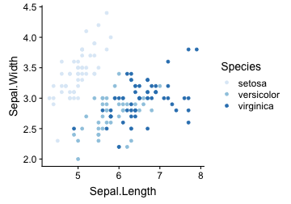
Scales
Scales
- Manually tunning your plots !
- The name is a tip for the function which a scale will apply (e.g.,
scale_x_log10(),scale_fill_grey(),scale_colour_brewer(),scale_y_continuous(),scale_y_discrete())
p <- ggplot(data = iris) +
geom_point(mapping = aes(x = Sepal.Length, y = Sepal.Width, colour = Species))
p + scale_colour_brewer()

Colour
p + scale_colour_brewer(palette = "YlOrBr")

Colour
- Google it: hex colour picker
p + scale_colour_manual(values = c("#4286f4", "#1b4484", "#051a3a"))
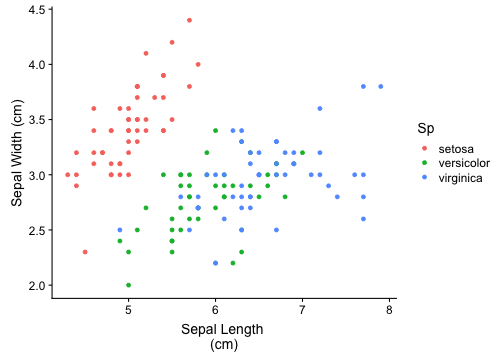
Guides: Legends and Axes

Scale Title
Supply text strings (using \n for line breaks) or mathematical expressions in quote() (check in ?plotmath)
p + xlab("Sepal Length \n(cm)") + ylab("Sepal Width (cm)") + labs(colour = "Sp")
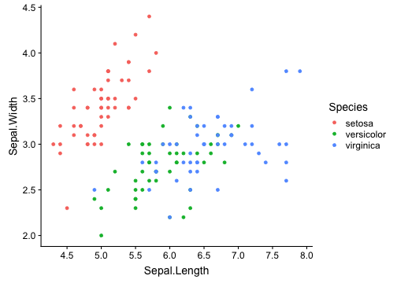
Labels with math expressions
- Use the template
+ expression(paste(<STRING>, <MATH VAR>, <REMAINING STRING)). Remove axis label withNULLexpression.
p + xlab("Sepal Length \n(cm)") + ylab(expression(paste("Sepal Width (",sqrt(cm),")"))) +
labs(colour = NULL) + scale_y_sqrt()
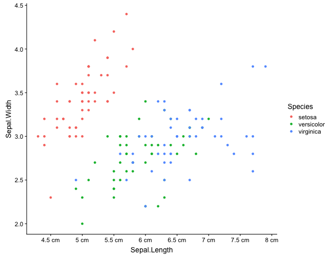
Breaks
The breaks argument controls which values appear as tick marks on axes and keys on legends.
p + scale_x_continuous( breaks = seq(4, 8, 0.5) )
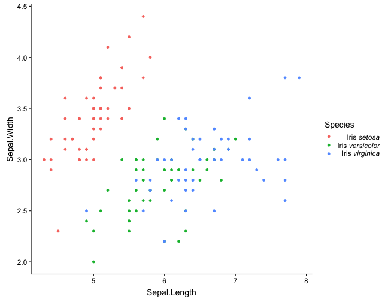
Each break can have an associated label, controlled by the labels argument.
p + scale_x_continuous( breaks = seq(4, 8, 0.5) , labels = paste(seq(4, 8, 0.5), "cm"))

Legends and fonts
- Use italics for species in plant names.

p <- p + scale_colour_discrete(name = "Species",
labels = c(expression(paste("Iris ", italic("setosa"))),
expression(paste("Iris ", italic("versicolor"))),
expression(paste("Iris ", italic("virginica"))))

Box Plot
- Use box plots to illustrate the spread and differences of samples.
- \(n=20\) samples from \(N(0,1)\).

## Min. 1st Qu. Median Mean 3rd Qu. Max.
## -3.03609 -0.59772 0.11208 -0.07907 0.56028 1.47123
Exercises
Q1. Use the following transformation of iris data to plot a boxplot for all discreve variables (i.e. Sepal.Width, Sepal.Length, Petal.Width, Petal.Length) coloured by Species names.
gather_iris <- tidyr::gather(iris, Sepal.Length:Petal.Width,
key="structure", value="size")
R1.
ggplot(data = gather_iris) +
geom_boxplot(mapping = aes(x = structure, y = size, colour = Species)) +
scale_x_discrete(limits = c("Petal.Width", "Sepal.Width", "Petal.Length", "Sepal.Length"))
Q2. With the same dataset construct a bar plot with the mean of each variable (tip: geom_bar()). Why it's not working?
#ggplot(data = gather_iris) +
# geom_bar(mapping = aes(x = structure, y = size, colour = Species))
Labels and Paths
- Suppose we plot the box plot the Petal's length for Iris setosa and Iris virginica. We compare the mean between the two distributions as we can see bellow. How do we plot the significance?
##
## Welch Two Sample t-test
##
## data: iris[iris$Species == "setosa", "Petal.Length"] and iris[iris$Species == "virginica", "Petal.Length"]
## t = -49.986, df = 58.609, p-value < 2.2e-16
## alternative hypothesis: true difference in means is not equal to 0
## 95 percent confidence interval:
## -4.253749 -3.926251
## sample estimates:
## mean of x mean of y
## 1.462 5.552
Adding text to a plot can be quite tricky. The main tool is geom_text() which adds labels at specified x and y positions.
1.Subset the data
iris_2sp <- iris[iris$Species %in% c("setosa", "virginica"), ]
head(iris_2sp)
## Sepal.Length Sepal.Width Petal.Length Petal.Width Species
## 1 5.1 3.5 1.4 0.2 setosa
## 2 4.9 3.0 1.4 0.2 setosa
## 3 4.7 3.2 1.3 0.2 setosa
## 4 4.6 3.1 1.5 0.2 setosa
## 5 5.0 3.6 1.4 0.2 setosa
## 6 5.4 3.9 1.7 0.4 setosa
2.Plot and label
boxall <- ggplot(data = iris_2sp) +
geom_boxplot(mapping = aes(x = Species, y = Petal.Length)) +
ylim(c(0, 10)) + geom_segment(x = 1, xend = 2, y = 8, yend=8) +
geom_text(x = 1.5, y = 9, label = "***", family = "mono", size=10)
boxall

ggpubr: Publication Ready Plots
Features:
- automatically add p-vlues and significance levels to box plots, bar plots and more.
- arrange and annotate multiple plots on the same page.
- change graphical parameters such as colors and labels.
library(ggpubr)
my_comparisons = list( c("setosa", "virginica") )
p <- ggboxplot(iris_2sp, x = "Species", y="Petal.Length", color="Species",
add="jitter", shape="Species") +
stat_compare_means(comparisons = my_comparisons,
label = "p.signif", method = "t.test")
p
plabeled <- ggboxplot(iris_2sp, x = "Species", y="Petal.Length", color="Species",
add="jitter", shape="Species") +
stat_compare_means(comparisons = my_comparisons, method = "t.test",
label="p.format", label.y = 8)
plabeled

Bar chart with error bars
ggbarplot(gather_iris, x = "structure", y = "size", color = "Species",
add=c("mean_sd"), palette = "jco", position = position_dodge(0.9), ylab="mean")

Saving Plots
- If the plot is on your screen
ggsave("~/path/to/figure/filename.png")
- If your plot is assigned to an object
ggsave(plot1, file = "~/path/to/figure/filename.png")
- Specify a size
ggsave(plot1, file = "~/path/to/figure/filename.png", width = 6,
height = 4)
- Or any format (pdf, png, eps, svg, jpg)
ggsave("~/path/to/figure/filename.eps")
ggsave("~/path/to/figure/filename.svg")
ggsave("~/path/to/figure/filename.pdf")
Placing multiple plots
library(cowplot)

ggdraw()

ggdraw() + draw_plot(boxall, x = 0, y = 0,
width = 0.5, height = 1) +
draw_plot(p, x = 0.5, y = 0,
width = 0.5, height = 1)
library(RColorBrewer)
pal <- brewer.pal(name = "RdYlBu", n = 3)
pmulti <- ggdraw() +
draw_plot(bar_ann + scale_fill_manual(values = pal) +
theme(axis.text.x = element_text(angle=60, vjust=0.5),
plot.margin = unit(c(6,0,6,0), "pt"), legend.position = "none") +
ylab(""), x = 0, y = 0.1, width = 0.5, height = 0.8)
pmulti <- pmulti + draw_plot(p + scale_colour_manual(values = c(pal[1], pal[3])) +
theme(plot.margin = unit(c(6,6,6,6), "pt")) +
theme(legend.position = "none"), x = 0.5, y = 0.2,
width = 0.25, height = 0.8) +
draw_plot(plabeled + scale_colour_manual(values = c(pal[1], pal[3])) +
theme(plot.margin = unit(c(6,6,6,6), "pt"))+
theme(legend.position = "none"), x = 0.75, y = 0.2,
width = 0.25, height = 0.8)
# write plot labels (A, B, C ...)
pmulti <- pmulti + draw_plot_label(label = c("A", "B", "C"),
size = 15, x = c(0, 0.5, 0.75), y =c(1, 1, 1))
# extract the legend from one of the plots
# (clearly the whole thing only makes sense if all plots
# have the same legend, so we can arbitrarily pick one.)
legend <- get_legend(bar_ann + theme(legend.position = "bottom") + scale_fill_manual(values = pal))
pmulti <- pmulti + draw_plot(legend, x=0, y=0)
#save_plot("/Users/rodtheo/Downloads/temp/firstDeck/figure/multiplot.png",
# pmulti, base_height = 8, base_width=12)